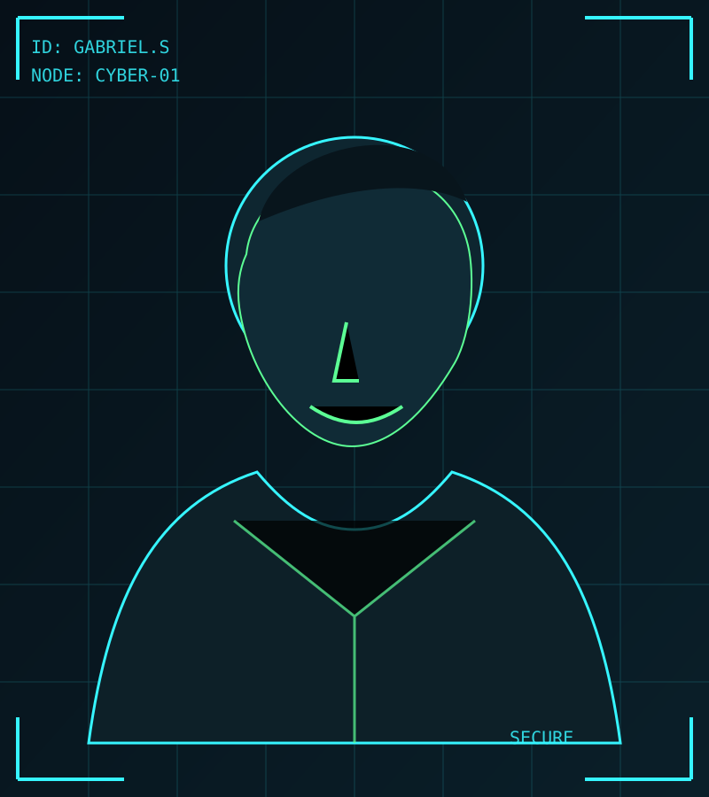
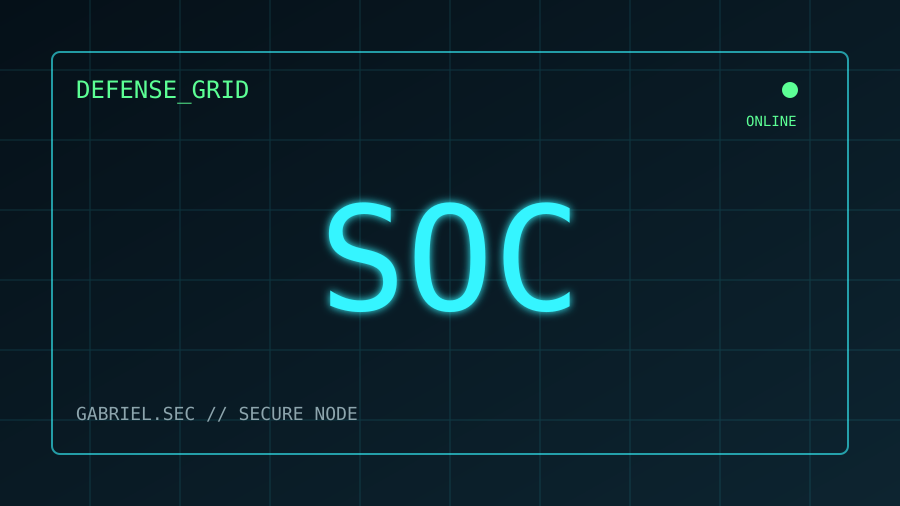
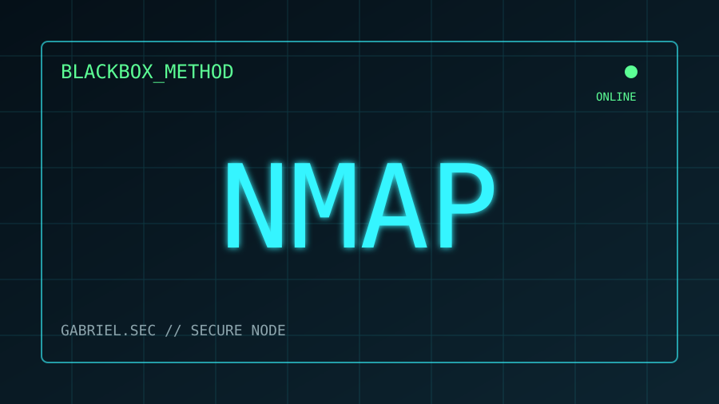
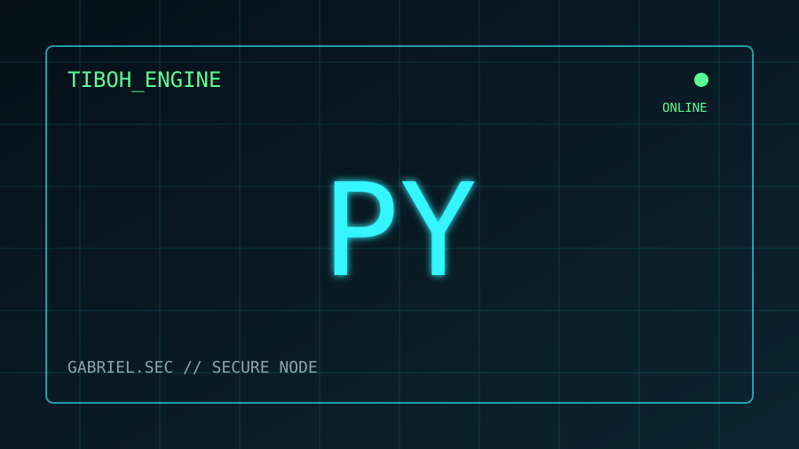
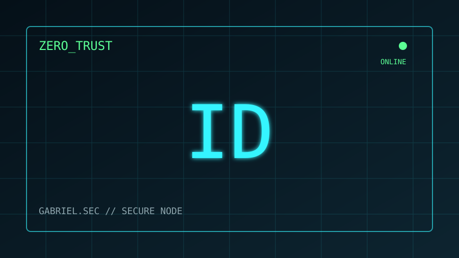
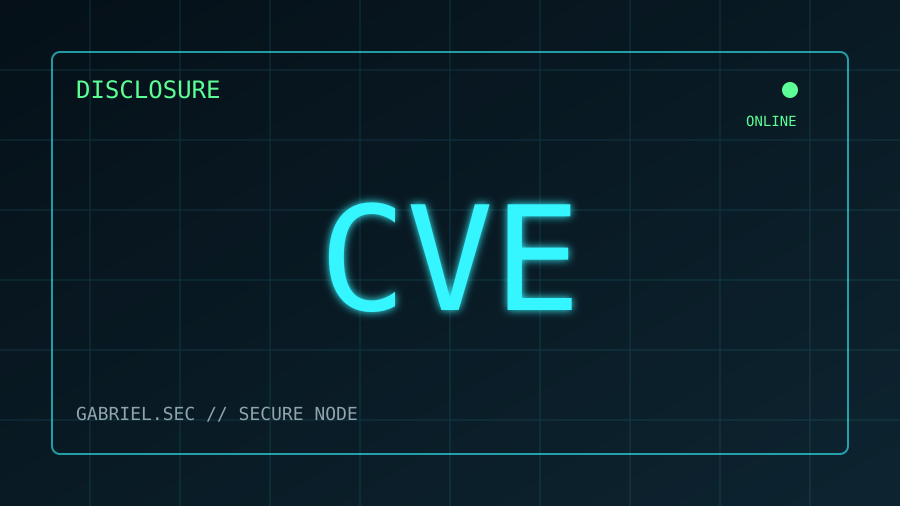
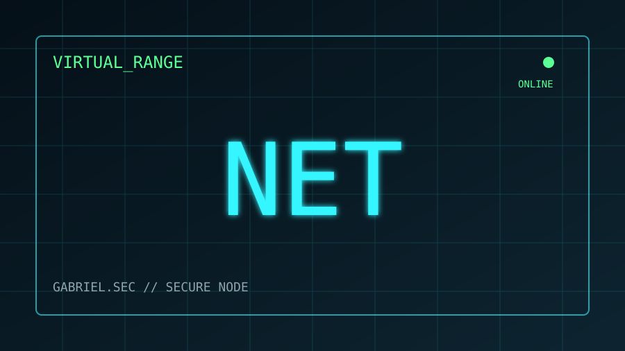

OFFSEC_CORE
Pentesting & Red Team
Reconocimiento, validación manual, explotación controlada y documentación técnica orientada a riesgo.
NmapBurp SuiteNucleiWPScanNiktoWireshark
OFFENSIVE SECURITY92%
OFFENSIVE SECURITY // BLUE TEAM AWARENESS
> █
Profesional de ciberseguridad con una base sólida en infraestructura, seguridad ofensiva y operaciones defensivas. Acumula alrededor de 10 años de experiencia en TI y cerca de 6 años trabajando con ciberseguridad, con enfoque en pentesting, evaluación manual de vulnerabilidades, SOC, hardening y respuesta ante incidentes.

user@gabriel-sec:~$ whoami
Cybersecurity Specialist
Pentesting • Red Team • SOC • Incident Response
Herramientas y áreas utilizadas en evaluaciones ofensivas, monitoreo, análisis y laboratorios de seguridad.
Reconocimiento, validación manual, explotación controlada y documentación técnica orientada a riesgo.
Monitoreo, análisis de alertas, hardening, correlación de eventos y respuesta ante incidentes.
Controles de identidad, MFA, Conditional Access, cumplimiento de dispositivos y mínimo privilegio.
Automatización de flujos, integración con APIs, Selenium y utilidades orientadas a operaciones técnicas.
Virtualización, segmentación, diagnóstico de red y construcción de laboratorios sobre Linux y macOS.
Evidencia reproducible, validación para reducir falsos positivos, análisis de impacto y recomendaciones de remediación.
Laboratorios y desarrollos representativos del enfoque técnico y de aprendizaje continuo.

Laboratorio defensivo en Apple Silicon con pfSense, Suricata y Wazuh para segmentación, detección y correlación de eventos.

Metodología de reconocimiento, validación manual y reporting enfocada en vulnerabilidades como SQLi, XSS, IDOR, fallas de autenticación y control de acceso.

Proyecto Python orientado a automatización de perfiles y flujos web mediante Selenium y APIs, con arquitectura modular y aislamiento por perfiles.

Baseline de identidad centrado en MFA, bloqueo de autenticación heredada, dispositivos conformes, mínimo privilegio, PIM y monitoreo de inicios de sesión.

Documentación de hallazgos con evidencia, impacto y remediación, priorizando divulgación responsable y reducción del riesgo para terceros.

Entorno de práctica con Kali Linux, Ubuntu, Docker y VMware Fusion para pruebas de red, seguridad ofensiva y escenarios de detección.
Experiencia transversal entre TI, seguridad ofensiva y operaciones defensivas.
Orientación a pentesting, Red Team, SOC, hardening y análisis de incidentes. Aprendizaje continuo en cloud, identidad y seguridad ofensiva.
Mayor especialización en reconocimiento, pruebas web, validación manual de vulnerabilidades y reporting técnico.
Experiencia práctica con soluciones de Trend Micro, Topia y Fortinet, junto a operaciones de infraestructura, monitoreo y hardening.
gabriel@sec-node:~$ profile --verbose
[OK] IT EXPERIENCE.................. 10+ years
[OK] CYBERSECURITY................. 6+ years
[OK] OFFENSIVE SECURITY............ ACTIVE
[OK] SOC / INCIDENT RESPONSE....... ACTIVE
[OK] RESPONSIBLE DISCLOSURE........ ENABLED
[OK] CONTINUOUS LEARNING........... ALWAYS_ON
> Ready for the next security challenge_█
Disponible para oportunidades y proyectos relacionados con pentesting, Red Team, SOC, análisis de ciberseguridad e incident response.
LATAM // REMOTO
STATUS: OPEN_TO_CONNECT